資料科學第五週-樞紐分析、表資料視覺化長條圖
想讓資料更有趣嗎？Seaborn是比Matplotlib更美觀的繪圖工具，用長條圖探索桃園廟宇分布吧。學用Pandas製作樞紐分析表，查看神明分布。透過Bar Chart比較不同神明數量。挑選顏色時參考Adobe Color等網站。探索Pandas、Matplotlib、Seaborn用法。使用AI快速處理Youbike站點資料，以長條圖呈現可借數量。
繼續資料視覺化的過程吧，來試試看同樣查看分佈的長條圖，並介紹Seaborn。
Seaborn 是建立在 Matplotlib 基礎上，提供了更高級、更美觀的繪圖功能。
查看分佈-以桃園的廟為例
先讀取桃園區有登記的廟宇：
1 | |
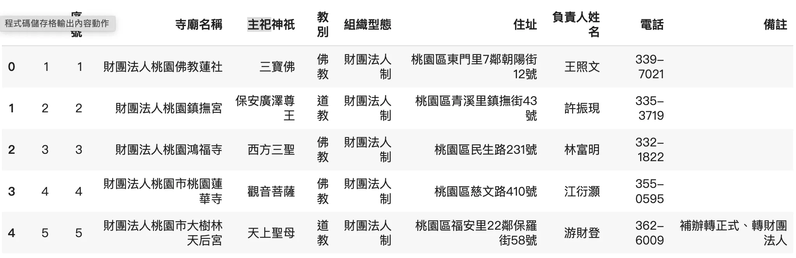
樞紐分析表Pivot()
主要把兩篇分開，也是想介紹Pandas中也有像Excel樞紐分析表的功能，非常強！重點參數如下：
index: 用於指定作為索引的列。這將成為新 DataFrame 的行標籤。
columns: 用於指定作為列的列。這將成為新 DataFrame 的列標籤。
values: 用於指定要聚合的列。如果未指定，將使用所有剩餘的列。
aggfunc: 用於指定聚合函數。默認為 numpy.mean。可以是函數名稱或函數列表。
在這我好奇「每個神有沒有隸屬的宗教？」，我就可以使用樞紐分析表，同時也秀一下Excel的版本，方便視覺化了解index, columns, value, 和aggfunc
1 | |
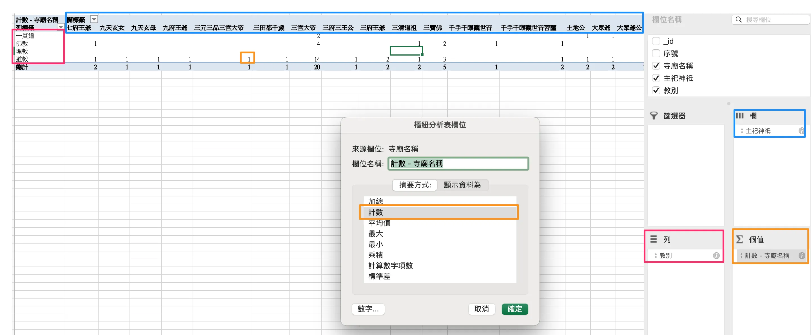
1 | |
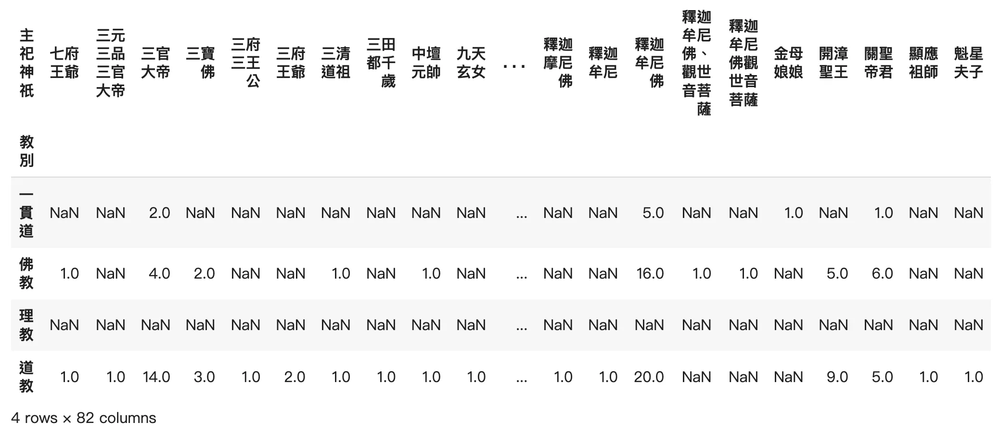
挑選福德正神來作為各教別的呈現資料
1 | |
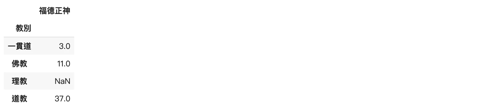
長條圖
為了教學唬爛一下，加入一種神明
1 | |
長條圖的參數
x：X 軸的標籤，通常是一組類別數據或索引。height：Y 軸的數據，對應於每個 X 軸標籤的高度。width：條形的寬度，默認為0.8。可以調整寬度使長條圖更加緊湊或分散。bottom：條形的基準線，默認為0。如果要實現堆疊長條圖，可以設置為另一組數據的高度。align：條形的位置對齊方式，有兩個選項：'center'（默認）：條形的中心對齊 X 軸位置。'edge'：條形的左邊緣對齊 X 軸位置。
繪圖
1 | |
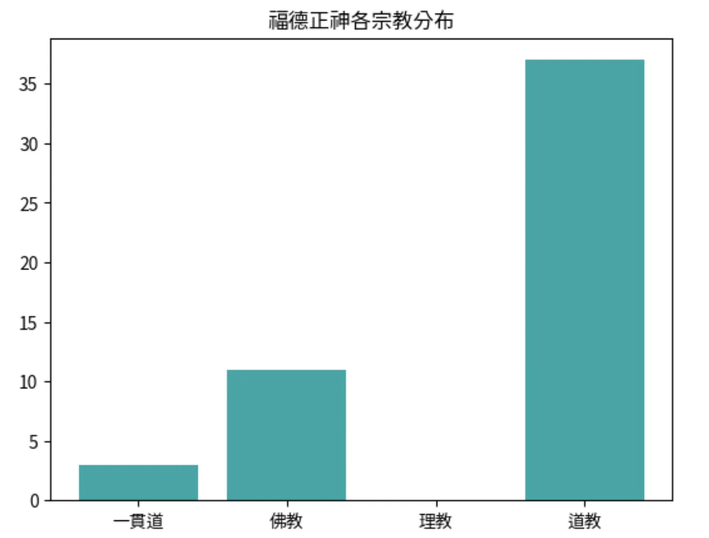
同時兩個神明做比較
同時兩種資料進行比較時，較簡單的做法可以使用pandas內建的bar chart，但缺點就是不能調整細節。
1 | |
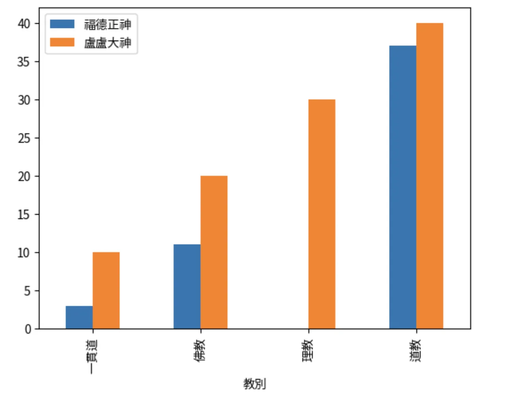
使用matplotlib可以對顏色、文字等進行修改，但要注意寬度可能重疊，要做調整，個人覺得顏色還是圖的靈魂啊！
1 | |
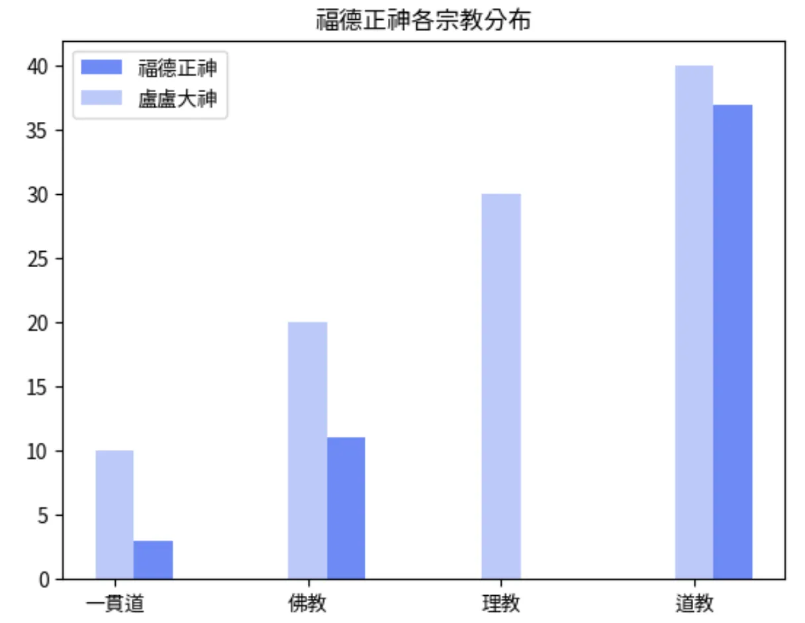
顏色的挑選
在挑選顏色時可以參考幾個網站，我個人推薦Adobe Color，其他也都可以嘗試看看：
Adobe Color
https://color.adobe.com/zh/create/color-wheel
Nippon Colors
https://nipponcolors.com/#higosusutake
預設顏色表
https://www.practicalpythonfordatascience.com/ap_seaborn_palette
Pandas, Matplotlib, Seaborn用法差異
最後，引用NTUDAC的圖，做個簡單用法比較
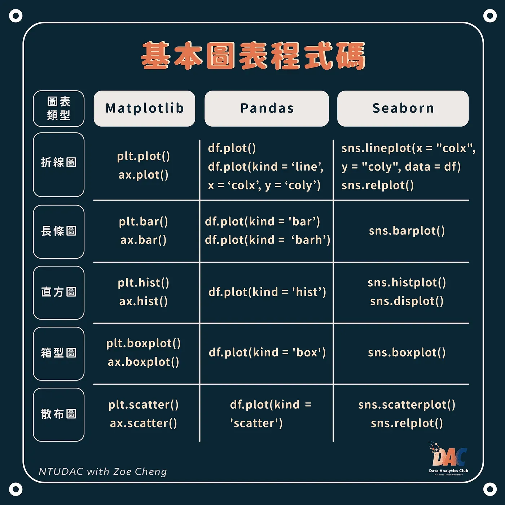
作業-Youbike各站資料呈現
示範利用AI的力量如何更快速產生結果
1 | |
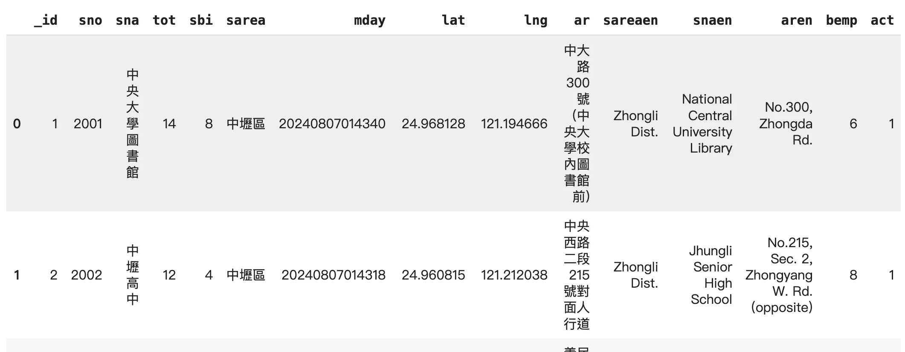
資料轉型與排序
1 | |
1 | |
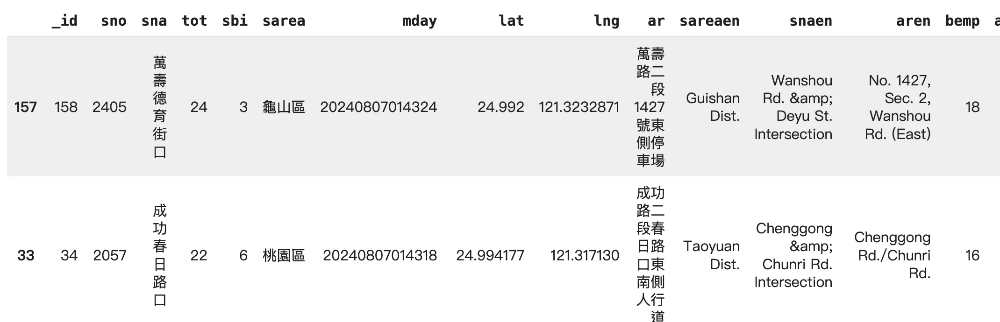
詢問ＡＩ
1 | |
1 | |
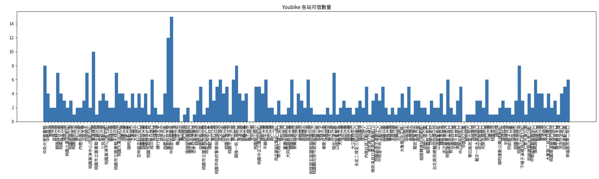